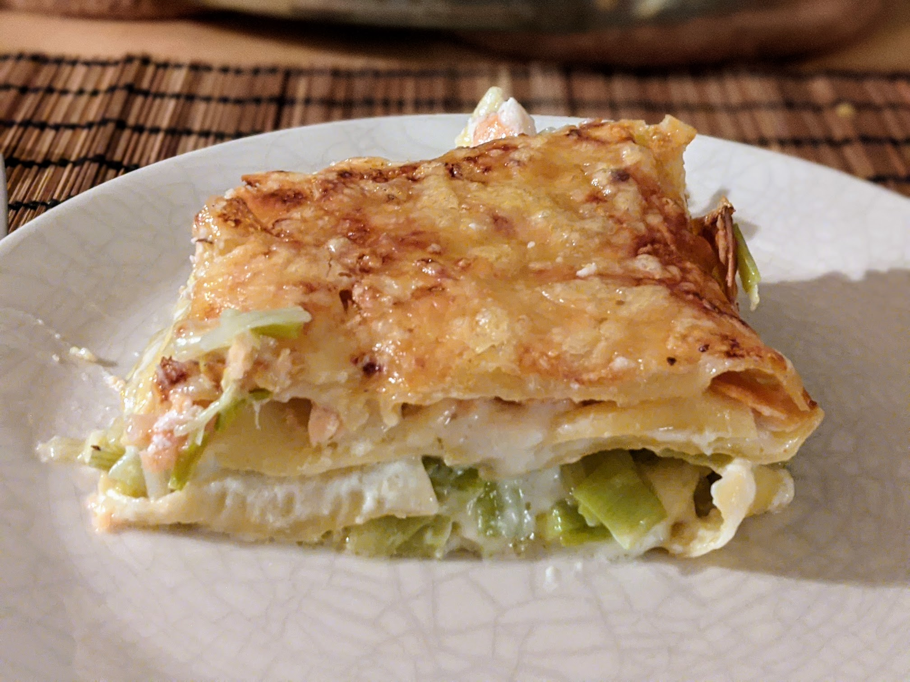

Lasagnes saumon-poireaux

Pour 6 personnes :
- Une vingtaine de plaques de lasagnes précuites (environ, mieux vaut prévoir large)
- 6-7 poireaux
- 450g de darnes ou de filets de saumon
- 200g de saumon fumé
- 75cL de béchamel
- Un peu d'emmental ou de mozzarella
- Sel, poivre, beurre
- Faire bouillir de l'eau dans une casserole assez grande, et faire préchauffer le four à 200°C environ.
- Laver les poireaux, les émincer en ne gardant que le blanc et le vert clair, et les faire revenir un bon bout de temps dans une casserole avec une grosse noisette de beurre, jusqu'à ce qu'ils roussissent.
- Pendant ce temps, passer le saumon frais au micro-ondes une minute à basse puissance, ou un peu plus si besoin, il faut qu'il commence à peine à changer de couleur par endroits et qu'on puisse l'émietter facilement.
- Émietter le saumon frais, et couper le saumon fumé en petits dés, les mélanger aux poireaux (une fois que plus aucun des ingrédients ne soit trop chaud, il ne faut pas que ça cuise plus). Râper l'emmental ou couper la mozzarella en petits morceaux.
- Faire préchauffer le four à 200°C. Beurrer un plat à four (les proportions fonctionnent bien avec un plat de 30×24cm). Mettre environ un cinquième de béchamel au fond, puis tremper les plaques de lasagnes dans de l'eau bouillante quelques secondes et les disposer par dessus. Ajouter un tiers du mélange saumon-poireaux, un cinquième de béchamel, et recommencer pour faire trois couches. Finir par le reste de béchamel et saupoudrer le tout de gruyère râpé.
- Enfourner pour 30 minutes. Servir chaud.